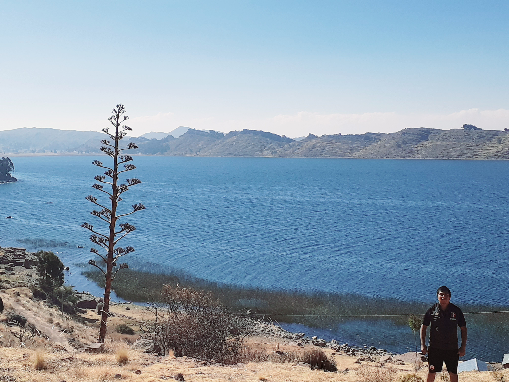
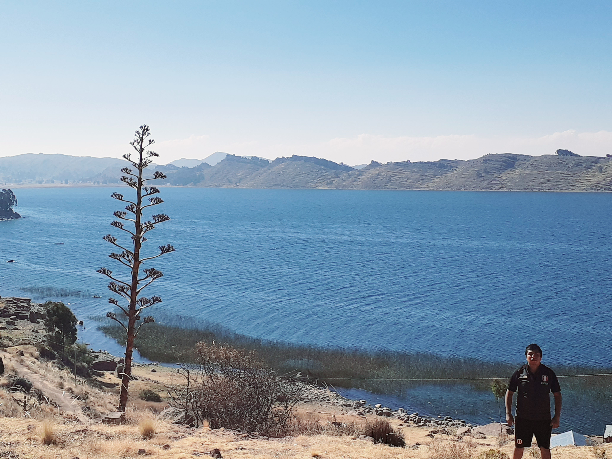

OFERTAS


INSTRUMENTOS:
Para hablar de los trajes típicos de Puno, hay que referirse al mestizaje cultural intenso, derivado de la presencia de los pueblos aimara y quechua, quienes, al contacto con la cultura occidental, experimentaron procesos de intercambio y sincretismo que determinaron una fuerte aculturación de los elementos nativos.
Una muestra evidente de este fenómeno es el atuendo de la simbólica chola puneña, musa de poetas y narradores. Uno de ellos, Mateo Jaika, la describió “con vistoso mantón de Manila, polleras de felpa, gros o chiflón de los más vistosos colores; sombrero honguito, colocado al lado, con tanta gracia sobre las dos trenzas de negra cabellera; blusa de lino con mangas voladas orladas de primoroso encaje; botas de cabritilla de altos tacones aperillados y con borlas, y algo que hacía resaltar más su belleza eran sus largos pendientes de oro y platino tachonados de perlas orientales y sus anillos de rutilante pedrería multicolor”. Lo peculiar de este atuendo, así como de otros, es que es usado tanto como disfraz para la danza, especialmente de la Pandilla y la Morenada, como en la vida cotidiana de la mujer que pertenece a tal estratificación social..
Mateo Jaika, la describió “con vistoso mantón de Manila, polleras de felpa, gros o chiflón de los más vistosos colores; sombrero honguito, colocado al lado, con tanta gracia sobre las dos trenzas de negra cabellera; blusa de lino con mangas voladas orladas de primoroso encaje; botas de cabritilla de altos tacones aperillados y con borlas, y algo que hacía resaltar más su belleza eran sus largos pendientes de oro y platino tachonados de perlas orientales y sus anillos de rutilante pedrería multicolor”. Lo peculiar de este atuendo, así como de otros, es que es usado tanto como disfraz para la danza, especialmente de la Pandilla y la Morenada, como en la vida cotidiana de la mujer que pertenece a tal estratificación social.